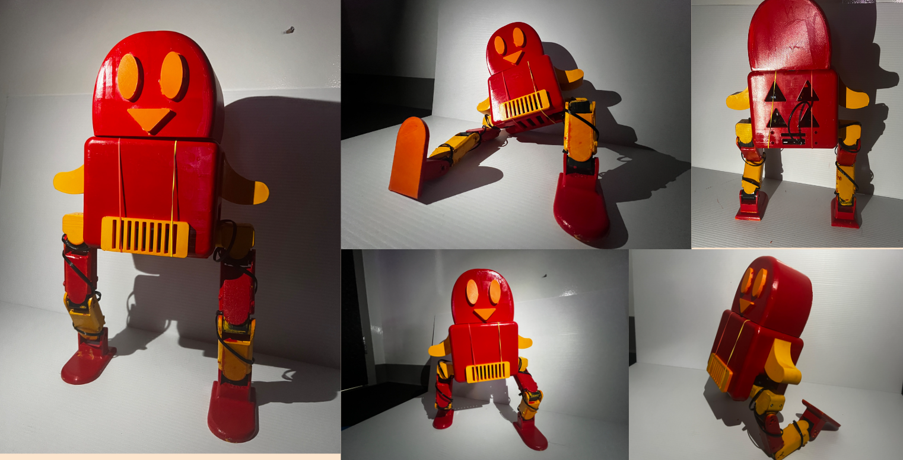

Eight LX16A motors were made available to me and my partner and close friend (Alejandro Assael). We had many different ideas, but decided to stick with a two-legged penguin like design. The name "Bucko O'Clock" instantly stuck. The nicknames "Bocko", "Toaster", "Buckmeister", and "Bucky" are all acceptable.
For a rough CAD model, we wanted a design with four degrees of freedom in each leg - three in the same axis (hip, knee, ankle) and one orthogonal (hip). At the time of this idea, we thought this would mean we could achieve a quasi-static gait, adjusting the lateral movement of Bucko's hips until the center of mass is within the footprint. The femur and the fibula are just the same part, helping with the modularity of the printing and assembly process.
sFor the detailed CAD we spontaneously adopted a new look for Bucko - Iron Man! This color scheme added more complexity to the somewhat minimalist design. We also added all of the screws, ensuring that the motor mounts, PCB mounts, and air vents are in the correct spots. An error of just 0.5 mm in the location of the motor screw mount would be unreliable and insecure. With time for printing quickly approaching, we skipped CAD for the wires, but we just so lucked out and experienced very few wiring problems during the build.
Assembly was a nightmare. This included: hours of filing away at 15% infill PLA until the clearance of the part was just right, several nearly stripped nuts and one that never came out (they say its still holding the knee together), some solder-iron surgery, and days of printer time on reprints. After several iterations on the CAD and assembly process, a viable solution was found. He is groovy and ready to move!
As we neared the end of the design deadline, we realized we were very behind. The python library we wrote to control the motors with the help of a commonly available GitHub LX16A Control Library was rudimentary. Commands were still being sent over physical wire. Worst of all, he was all the same color. After many all nighters, we managed to A) interpolate smoothly between keyframes so as to complete certain movements, B) connect the Raspberry Pi to the computer/remote wirelessly through LAN and its IP-adress, and C) sand down all the parts and paint them in yellow and red.
